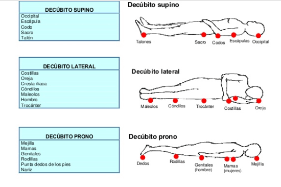

Debajo del cráneo empieza a lo que conocemos como columna cervical. La componen 7 vertebras (C1, C2, C3, C4, C5, C6, C7) y 8 pares de nervios cervicales (C1-C8). (1)
La columna cervical tiene como funciones: (1)
• Contener y proteger la médula espinal.
• Soportar el cráneo.
• Permitir los diversos movimientos de la cabeza.
Las vértebras en esta zona son las más pequeñas a comparación de las demás vertebras espinales. Para que se estabilice la columna vertebral y tenga soporte, existe un sistema conformado por (2):
*Ligamentos: previenen el movimiento excesivo, que podría provocar lesiones graves.
*Tendones: ayudan con el movimiento, siendo unas estructuras muy resistentes.
*Músculos: mantienen el equilibrio y la estabilidad, permiten el movimiento. Además, estos se contraen y relajan en respuesta a impulsos nerviosos originados en el cerebro. Es importante decir que existen músculos que actúan como pares o antagonistas, por ejemplo, cuando uno se contrae, el otro se relaja. (2)
La medula espinal es un haz cilíndrico de fibras nerviosas y tejido asociado que se encuentra encerrado por la columna vertebral, conectando casi todo el cuerpo con el cerebro formando el sistema nervioso. (3)
Los traumas o lesiones de la columna cervical pueden ocasionar emergencias e incluso la muerte. Los nervios cervicales controlan actividades sensoriales y las funciones del cuerpo, se dividen en(3):
• C1 y C2: controlan cabeza y cuello
• C3: Controlan el diafragma
• C4: Controlan los músculos de la parte superior del cuerpo.
• C5 y C6: Controlan los extensores de la muñeca
• C7: Controlan los tríceps
• C8: Controlan las manos
Cuadriplejia es la pérdida de movimiento parcial o total de las cuatro extremidades, el tronco y los órganos pélvicos, causado por una lesión de la médula espinal o también por alguna enfermedad que afecte las neuronas motoras, que, además, tiene como consecuencias cambios permanentes en la fortaleza, la sensibilidad y otras funciones corporales debajo del sitio de la lesión (4).
La cuadriplejia es causada frecuentemente cuando aparece una lesión en la zona cervical, frecuentemente ocasionada por accidentes automovilistos, caídas, lesiones deportivas, distrofia muscular, e incluso condiciones como (5):
• Síndrome de la arteria espinal anterior
• Luxación de la articulación atloaxoidea
• Malformación de Arnold Chiari
• Meillitis transversa
• Poliomelitis
• Espina bífida
La cuadriplejía es una parálisis de ambos brazos y piernas, que se da cuando hay una lesión en la zona cervical, en muchos casos esta es inmediata después de un accidente. Se empieza por una fase de shock medular, el paciente suele deprimirse en esta fase, al perderse toda actividad nerviosa bajo el sitio de la lesión. Posteriormente, los músculos se tensan y empiezan a aparecer reflejos en la parte paralizada como respuesta a estímulos. Como etapa final, después de la curación de la fractura ósea vertebral, el paciente comienza a aceptar la realidad en la que se encuentra, se somete a rehabilitación para progresar física y anímicamente. (6,7)
a) Cuidado de la piel
Objetivo: Mantener una piel intacta en el paciente.

b) Movilización
Ejercicios pasivos y activos que incluyen desplazamiento para disminuir la presión sobre prominencias óseas.
Cambios posturales
c) Superficies de apoyo
A los pacientes con riesgo de desarrollar UPP debe
colocársele un dispositivo de apoyo que disminuya la
presión.

Referencias
1. Ghandi, S., Schulder, M. Cervical spine. American Association of Neurological Surgeons [Internet]. 2019 [Consultado 1 Set 2019]. Disponible en: https://www.aans.org/Patients/Neurosurgical-Conditions-and-Treatments/Cervical-Spine